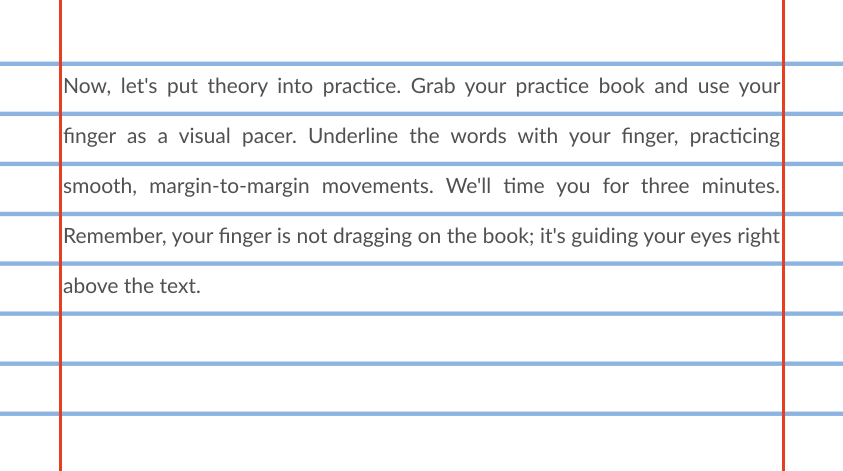

Join Community
How To Use A Visual Pacer

Key Learning
loose your finger while read
underline words with your finger / Mouse
Not drag finger on the book or the screen just above the text
Practice going margin to margin
and your eyes flowing your finger
When you do your 10 minutes of reading use your finger as a Visual Pacer
Practice reading 10 minutes Using Visual pacer
Take Test